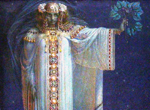

m
Libushe, the
wise witch who
governed the ancient Czechs.

Taina dancer
from Borinquen
(Puerto Rico)
Most of Max Dashu's articles and book excerpts
are on the Suppressed Histories site.
Below are some articles and interviews on other sites:
Goddess Pages:
The Meanings of Goddess, Part One: What we mean when we say “Goddess”
The Meanings of Goddess, Part Two: Goddess Heresies: the legacies of stigma in academia
The Meanings of Goddess, Part Three: Essentialism or Essence -- Out from the Land of Theory
Articles on Seasonal Salon: Reformed Congregation of the Goddess
In Praise of Faith (Spring Equinox 2009)
Power of Images, Power of Names (Winter Solstice 2008)
Searching for Diana (Fall Equinox 2008)
Midsummer Dancers (Summer Solstice 2008)
Rise Up (Spring Equinox 2008)
In the Pool of Night (Winter Solstice 2007)
Empires Fall (Fall Equinox 2007) or see a fuller version here
Wheels and Spirals (Summer Solstice 2007)
Variations in Season (Spring Equinox 2007)
Into the Darkness (Winter Solstice 2006)
Vision in the Midst of Difficulty (Fall Equinox
2006)
Connections in Time (Summer Solstice 2006)
Online Interviews:
Wisdom Talks with Dr. Tonya K. Freeman
“The Black doves,” on African Sibyls
Wisdom Talks program 64 minutes. (Scroll down to June 8, 2008)
Voices of the Sacred Feminine interviews with Karen Tate:
"The Oldest Goddess" (scroll down to Jan. 23, 2008)
"Women's Power" (scroll down to August 27, 2008)
"Suppressed Histories, Mother-Right, and Patriarchy" (scroll to April 28, 2010)
Raising Sand Radio interview with Susan Galleymore
The Gaialogue with Joanna Harcourt-Smith
"Overturning the Masculine Default": with Stephanie Hiller in Awakened Woman e-zine
Matrifocus Articles
The Old Goddess, Beltane 2006
Stone-Raising Spinners, Lammas 2006
Tregenda of the Goddess, Samhain 2006
The "Pagan Days" of Year's End, Imbolc 2007